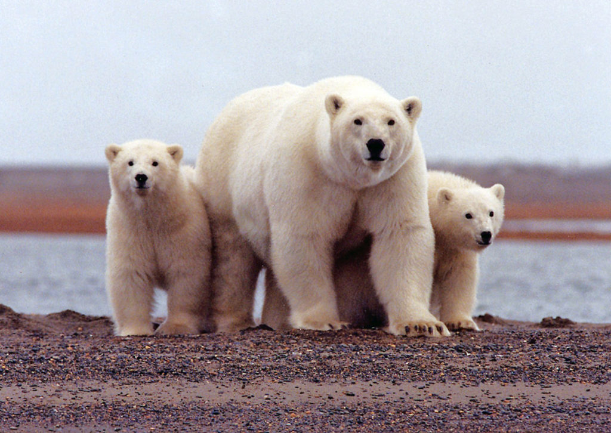
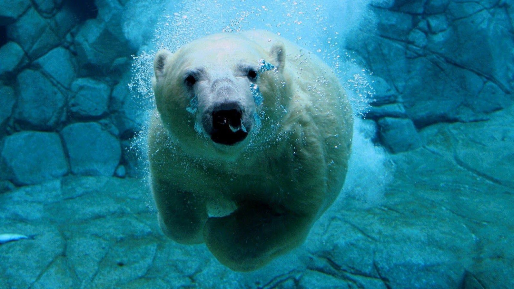

|  |
Kutup Ayısı
Kutup ayısı (Ursus maritimus) aynı zamanda beyaz ayı, ya da deniz ayısı, ayıgiller (Ursidae) familyasından soğuk kuzey kutup bölgesinin karlı sahillerinde ve buzullar üzerinde yaşayan ayı türüdür. Yaşamakta olan en büyük kara etoburudur (boz ayı daha büyüktür ama bir Karnivor değil omnivor sayılmaktadır) ve bulunduğu ortamdaki süper yırtıcıdır. Yaşadığı çevreye çok iyi uyum sağlamıştır. Kalın kürkü onu soğuktan korur, beyaz görünümü avlarından saklar. Kutup ayısı hem karada, hem denizde, hem buzda, hem de su içinde zorlanmadan avlanır.
En çok balık ve foklarla beslenir. Aç kaldığı zamanlarda yüzen buz parçaları üzerine binip kilometrelerce uzaklara giderek besin arar. Fok balıklarının buz tabakasındaki soluk alma deliklerinde pusuya yatar.
|

|